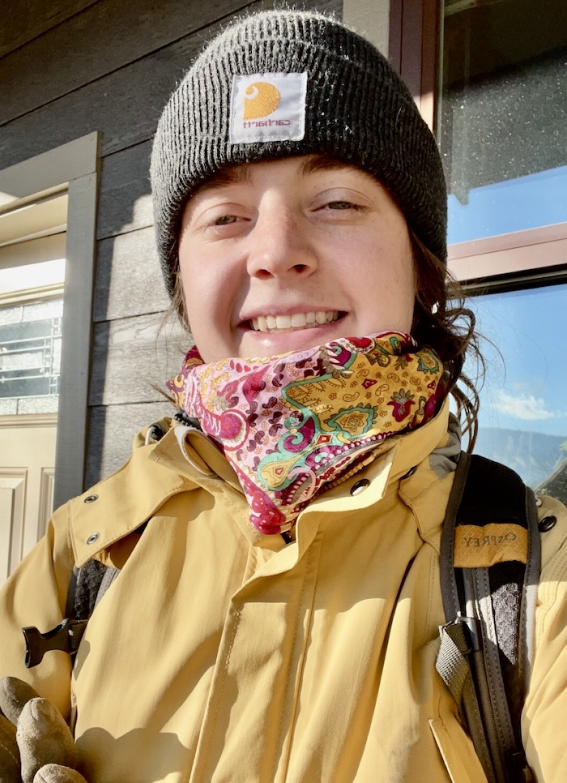

Growing up in Montana, I’ve been around art for as long as I can remember. My father is a graphic designer, and my grandmother is an artist. Some of my first memories involve going to her art shows and spending time in her home filled with art she’d created. I have always treasured producing, observing, and educating. I started teaching skiing at fourteen years old. With my expansive volunteering with Special Olympics, I decided the best route would be to become a teacher. When I began my secondary education at the University of Montana Western Art Education, I found myself more interested in my art classes than my teaching ones. I excelled in the local art community and got my first commission through the Paris Gibson Square Museum of Arts. I decided I wanted to focus on my art and didn’t want to teach right after college. I felt inexperienced as an artist and desired to explore it more fully. When covid hit I transferred to the University of Montana. Where I fell for ceramics and sculpture. The material processes are the most intriguing for me. In each clay stage, there is a chance that it won't turn out the way you expect. As I grow, my current style is pushing the physical limits of material to create and explore the natural texture of clay.
